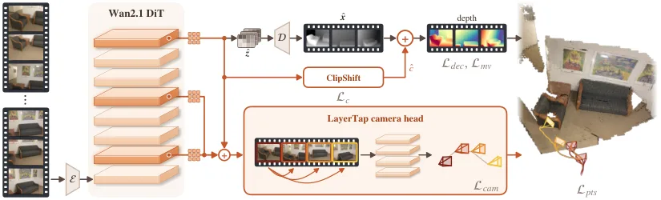

新论文 · 日期 2026-11-21 · score 18 · S层 · Geometry Foundation Models / 3D Foundation Models · cs.CV
内容级别：完整单篇海报
作者：Jingong Chen, Qingwen Zhang, Lin Lian, Xinxin Zuo
评分 8.9/10
视频生成先验前馈重建相机位姿逆深度平移多层特征Wan2.1
一句话工作总结：一句话：视频生成模型里已经藏着深度和相机运动，缺的只是一个「平移量」和一个「多层相机头」，补上这两样就能一步前馈出场景与轨迹。
视频生成模型已被当作三维先验使用，但用于重建时要么只出深度不出相机，要么靠几十步迭代去噪联合生成几何与相机，速度很慢。VG3R 把预训练 Wan2.1 用 LoRA 微调成前馈模型：它发现生成模型其实已经编码了深度与相机运动，只是形式不对。为此加两个部件——片段级平移预测（ClipShift）用注意力池化整段视频的 transformer 特征，回归出解码逆深度时被归一化抹掉的那个平移量；多层相机头（LayerTa…
Video generation models are widely used as 3D priors for novel view synthesis and 3D scene generation. Fine-tuned for perception, generation models also excel at dense prediction such as depth estimation. Howe…

新论文 · 日期 2026-11-24 · score 12 · S层 · Geometry Foundation Models / 3D Foundation Models · cs.RO, cs.CV
内容级别：完整单篇海报
作者：Mishuo Han, Zhixuan Liang, Zhaoyuan Wan, Wendi Chen
评分 7.1/10
世界动作模型三维教师蒸馏空间转变 queryVGGT操作策略RoboTwin
一句话工作总结：一句话：不预测未来像素，而是预测「三维教师特征会怎么变」——把这个变化量蒸馏成 query，动作生成时只读 query，部署时不需要教师也不需要未来帧。
机器人操作策略如果预判物体怎么动、空间关系怎么变，动作会更准。世界动作模型（WAM）通过预测未来视觉观测来学这件事，但训练目标通常把底层的三维几何转变留在隐含层。Foresight Forcing（F²）改为从预训练三维特征空间的变化里学「空间转变表示」：训练时用冻结的 VGGT 对「对齐后的当前帧与未来帧」抽取 patch 特征，取逐 patch 差值作为稠密监督，蒸馏进一组空间转变 query；这些 query…
Robotic manipulation policies can improve action prediction by anticipating how objects move and how their spatial relationships change. World Action Models (WAMs) learn to predict future visual observations,…

新论文 · 日期 2026-11-22 · score 10 · S层 · Geometry Foundation Models / 3D Foundation Models · cs.CV
内容级别：完整单篇海报
作者：Zeyu Ren, Jie Ni, Rui Qian, Jiahao Wei
评分 8.6/10
单步扩散点图表面法向实例分割相机射线编码DINOv3
一句话工作总结：一句话：三张图不是三个任务，而是三条 token 流——用射线定位、用流掩码隔噪、用 DINO 亲和度分组，一次前向全部出。
理解场景既需要几何（表面在哪、朝哪），也需要语义（哪些面属于同一个物体），但现有模型要么用两个网络、要么跑两遍。PINE 是一个单步 Omni Diffusion Transformer：把点图、表面法向与实例图各当作一条 token 流，用流匹配去噪几何流、用聚类损失直接回归实例流，并用流掩码阻止实例流与几何噪声互相污染。它把每个 token 的位置从「像素索引」改成「该 patch 的相机射线与参考相机平面的交…
Understanding a scene requires both geometry and semantics: geometry recovers its spatial structure, and semantics separates it into objects. Current models obtain the two from separate networks or separate pa…

新论文 · 日期 2026-11-20 · score 10 · S层 · Geometry Foundation Models / 3D Foundation Models · cs.RO
内容级别：完整单篇海报
作者：Yang Liu, Chao Ye, Jiahao Zhang, Zeyuan Hou
评分 7.3/10
4D 世界模型几何–运动潜变量场景流逆动力学模态路由 LoRA机器人操作
一句话工作总结：一句话：不要用视频像素当世界模型的接口，用「点图 + 场景流」这组几何–运动潜变量，既能解码成 4D，也能直接喂给逆动力学出动作。
Ego4Gen 是一个面向机器人操作的四维未来生成世界模型：给定一张第一视角图和一段文字指令，它联合生成时间对齐的 RGB 帧、稠密点图与稠密场景流，同时预测外观、空间结构与运动如何演化。它以 Cosmos3-Nano 为骨干，通过「按模态路由的 LoRA」与「非对称注意力」把冻结的生成先验扩到三个模态，并用 MotionCrafter 给出的几何伪标签学习预测未来的几何与运动潜变量。这些潜变量既可直接解码成显式三…
We present Ego4Gen (Egocentric 4D Future Generation), a world model for 4D future generation in robotic manipu lation. Given a single egocentric image and a text prompt, Ego4Gen jointly generates temporally al…